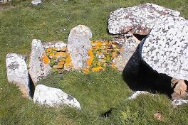

Lé Ménage ès Feuvres,
St. Ouën.
Lé 15 d'octobre, 1966.
Moussieu l'Rédacteu.
"Quand tu s'sas un homme et qu'tu éthas finni t'n êcollage," Papa m'dit eune séthée quand j'tais mousse y'a septante ans, "Et si tu-es d'bouan comport et qué l'Bouan dgieu t'aie donné assez dé p'tits boudîns dans la tête, tu pouorras p't êt' être êlu membre d'eune association d'gens tch'a nom La Société Jersiaise. Ou' fut fondée y'a eune trentaine d'années, pus ou mains, pour l'êtude et la prêsèrvation d'l'histouaithe, lé langage, la géologie et l's antitchité d'Jèrri, et la publyication d'dotchûments historiques.
"Si tu'est privilegié d'en êt' membre," Papa continnuit, "I' faudra qu't'êprouves à faithe la Sociêté fouoilyi dans L'Creux des Faîtchieaux sus l'haut des Monts d'Grantez. Y'a des hougues, étout, tchi pouorraient êt' fouoilyies par la Sociêté. Y'a, entr'autres, La Hougue Bie."
"Tch'est qu'ch'est qu'eune hougue, Papa?", j'li d'mandis.
"Eh bein, man garçons," i' m'dit, "Ch'est un p'tit mont en d'ssus d'un dolmen, et un dolmen est un monument ou tombe des druïdes tch'avait probabl'yément fait sèrvi d'lieu d'tchulte étout. Quand les grands-prêtres ou chefs des druïdes meuthaient, i' l's entèrraient dans l'dolmen et l'couvraient atout des tonnieaux d'tèrre pour empêchi les morts d'êt' dêrangis ou d'sentèrrés pus tard, et v'la tch'i' faisait lé p'tit mont qu'nou-s appelle eune hougue!"
"Mais, y'a-t-i' eune tombe dé mème sus Les Monts d'Grantez, Papa?", j'lî d'mandis.
"Pèrsonne né l'sait pour seux," i' m'dit. "Mais ma Papa Jean L'Feuvre, tchi fut né en 1781, l'année d'La Batâlle dé Jèrri, m'a dit dans san vivant qu'san Papa, à li, Ph'lippe Le Feuvre, né en 1723, lî dîsait tch'i' d'vait y'en aver ieune car ch'tait là tch'était la d'meuthe des P'tits Faîtchieaux, et y'a un flias sus l'haut des Monts tch'est appelé L'Creux des Faîtchieaux, acouo aujourd'aniet!"
"Mais tch'est qu'ch'est qu'des Faîtchieaux?", jé d'mandis à Papa.
"Ch'tait des touos p'tits bouanshommes, tout-à-fait rêéls dans l's idées des touos anciens," Papa m'dit. "I' pathaît qu'lus hant à St. Ouën 'tait d'tchiquebord lé tou d'La Tchiébault à L'Êta, et tch'i' vivaient souos-tèrre et 'taient bein riches. I' ramontaient à Millais à j'va par lé Mont des Corvées, et pis il' entraient dans eune cave tchi condîsait à lus d'meuthe souôtèrraine. J'ai tréjous ouï l's anciens dithe qué la cave 'tait là où-est tch'est L'Clios des Pouquelées."
"Quand nou-s est auprès L'Creux des Faîtchieaux sus les Monts, et qu'nou r'garde un mio Su-Êt à gauche dé La Mathe au Seigneu, nou peut justément vaie à la veue d'yi, et tout-à-fait cliai atout des longue-veues, trais grosses pièrres appelées Les Trais Rocques dans l'mitan d'un grand clios. Les viels gens disaient tch'il avaient tréjous ouï qué ch'tait Les P'tits Faîtchieaux tch'avaient porté ches pièrres-là d'lus creux là où-est tch'i' sont! I' pathaît qu'trais faîtchieaux avaient porté eune pièrre châtchun dans lus d'vanté, et qué quand il' arrivîdrent auprès d'La Mathe au Seigneu l's amathes dé lus d'vantchieaux mantchîdrent et i' laîssîdrent les pèrrons là où-est tch'il' avaient tchaie, et qué ch'tait pour faithe peux ès Turques tch'i' les laissîdrent-là! La légende né n'nouos raconte pon comment tch'i' s'adonnait tch'i' y'avait des Turques par les c'mîns dans chu temps-là! Enfîn, ch'est p't êt' viyant qu'les Trais Rocques sont là tch'i' n'y en a pon à ch't heu!"

"L's anciens avaient eune fichue peux, à ch'tch'i' pathaît, dé dêrangi ou d'fouailyi dans lus creux, ès faîtchieaux, sus Les Monts d'Grantez, viyant tch'i' criyaient qué s'il' taient dêrangis dans lus habitacl'ye, tchique grande avârie 'tait seûthe dé tchaie sus l'co au monde, mais jé n'pense qu'pèrsonne éthaient peux d'y fouoilyi à ch't heu. Si tchitchun pouvait en pâler ès grosses têtes dé La Société Jersiaise, la Sociêté pouorrait p't êt' aver la pèrmission d'Moussieu l'Bailli d'ouvri l'creux pour vaie s'i' y'a un dolmen dessous comme l's anciens l'ont tréjous pensé!"
"Mais as-tu connu tchitchun tch'en a veu, Papa, des faîtchieaux?" j'li d'mandis.
"Nannîn," i' m'dit, "Mais man grandpéthe mé disait qué quand il 'tait mousse il avait connu des gens tch'en avaient veu! Quant à mé, j'peux dithe qué j'n'en ai janmais veu"
"Mais pour èrvénîn ès druïdes", Papa m'dît, "Dépis tch'i' y'a des dolmens en Jèrri, i' faut penser qu'les touos touos vièrs Jèrriais 'taient des druïdes et tch'i' faisaient sèrvi les dolmens comme lieux d'tchulte. L's allées 'taient alingnies dé l'ouest à l'Est, et ouvèrtes du but Est. Quand il' 'taient assembliés dans l'allée i' viyaient la lueu du solé l'vant et l'adoraient. Ch'tait tout naturel, quand nou veint à y penser, qu'les gens fûssent împressionnés par lé solé tch'est si bénéficiel pour tous sus la tèrre. L's Aztèques dé l'Améthique du Sud l'adoraient étout, et les Mayas du Yucatan adoraient la plyie. Ch'tait viyant qu'lus pays 'tait si caud qu'y'avait hardi d'sécrèches et qu'la plyie lus apportait l'soulagement et des récoltes. Sans doute, lé Chrêtchienisme n'était pon connu dans ches temps-là!"
George d'La Forge
Viyiz étout: